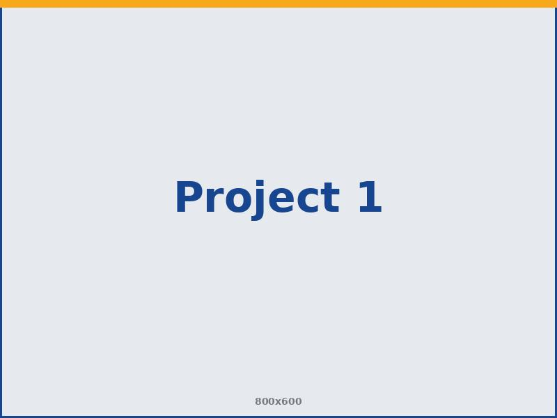
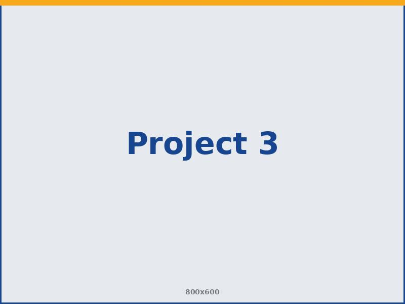

Hunger Relief
Annual Food Drive
Each year we collect and distribute thousands of meals to families across Somers and Tolland County, partnering with local pantries to reach neighbors in need.
From our own backyard in Somers to communities around the world, our hands-on projects turn generosity into lasting change. Here's a look at the work we're proud of.

Each year we collect and distribute thousands of meals to families across Somers and Tolland County, partnering with local pantries to reach neighbors in need.
Members and families keep a stretch of Somers roadway clean and safe, gathering several times a year to care for our shared spaces.

We provide dictionaries and books to local elementary students, helping spark a love of reading in the youngest members of our community.
From accessibility ramps to seasonal cleanups, our members show up for residents who need a hand keeping their homes safe and comfortable.
As part of Rotary International, we contribute to the global campaign that has brought the world to the brink of eradicating polio for good.
Through Rotary Foundation grants, we help fund clean-water and sanitation projects that bring safe drinking water to communities in need.
We partner with clubs abroad on education and literacy grants, extending the reach of our giving far beyond Connecticut.
We're always looking for new ways to serve. If you know of a need in Somers — or want to roll up your sleeves with us — we'd love to hear from you.
Get in Touch